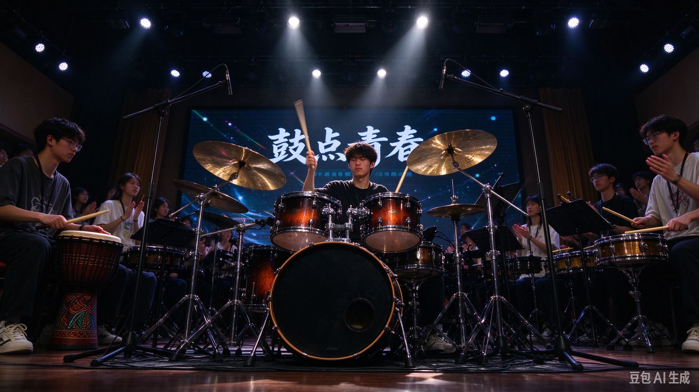

示范曲目
社团简介 | 活动安排 | 风采展示 | 社员故事 | 在线报名
校园打击乐社成立于2018年，是学校充满活力的文艺类学生社团。 社团以架子鼓、卡洪鼓、非洲鼓、小军鼓、铃鼓等各类打击乐器为核心， 组织日常练鼓、节奏训练、合奏排练、舞台演出等活动， 为热爱节奏、喜欢鼓乐的同学搭建交流展示的平台。
不管你是从来没碰过乐器、分不清节拍的小白，还是已经会打鼓、有演奏经验的爱好者， 我们都欢迎你的加入。社团会安排老社员带新，从基础节拍、握槌手法、手脚配合一点点教学。
社团固定活动场地在学生活动中心排练室， 每周设置固定练鼓时段，也会根据演出需求安排加练， 准备迎新晚会、音乐节、各类校级文艺汇演节目。
下面是本学期社团主要活动计划，时间会根据学校通知微调，以社团群通知为准。
| 打击乐社本学期活动安排表 | |||
|---|---|---|---|
| 活动名称 | 活动时间 | 活动地点 | 负责人 |
| 新成员见面会&节奏体验课 | 第2周 周五晚 | 学生活动中心 打击乐排练室 | 赵阳 |
| 基础节拍与握槌教学 | 第3周 周六下午 | 林雨 | |
| 校园音乐节打击乐专场 | 第7周 周日 | 操场舞台 | 周航 |
| 期末汇报合奏演出 | 第16周 周六晚 | 大学生活动中心大礼堂 | 陈诺 |
除表格活动外，平时还有自由练鼓、合奏磨合、节奏小游戏等轻松活动， 欢迎大家提出创意，一起策划好玩的节目。
下方是往期演出现场照片，点击图片查看更多社团介绍。 使用时把图片文件名换成你自己的图片即可。

图为校园音乐节上，社员架子鼓合奏的舞台画面。 日常反复的节拍练习，都会在舞台上变成超燃的现场。
下面嵌入社团宣传视频，后续可以替换成实拍视频文件。
小苏刚入社的时候完全没有乐理基础，连四分音符、八分音符都分不清。 在学长学姐耐心带练下，从打拍子、练基本功开始，坚持每周来排练室练习。 一个学期之后，他已经可以独立完成多首流行曲的架子鼓伴奏， 在迎新晚会上完成了第一次登台。
小凯平时学业压力比较大，偶然体验打鼓之后爱上了打击乐。 敲鼓的时候所有注意力都放在节拍上，烦恼跟着鼓声一起释放。 从一开始紧张放不开，到后来享受每一次合奏，慢慢变得开朗自信。
很多社员说，加入打击乐社最大的收获不只是学会打鼓， 更是认识一群同样热爱节奏的朋友。一起抠节拍、一起磨合合奏， 互相鼓励、互相纠错，在咚咚的鼓声里收获温暖的友谊。
如果你喜欢热烈的节奏，想要感受鼓点带来的快乐， 那就加入我们，一起用鼓声点亮校园舞台！
请认真填写信息，联系方式务必准确，提交后社团会通知体验课和面试时间。
提交之后如果信息填错，可以重新填写提交最新版本。
校园打击乐社 · 纳新网页（HTML课程实验用）
本页面仅作为HTML基础实验示例代码。